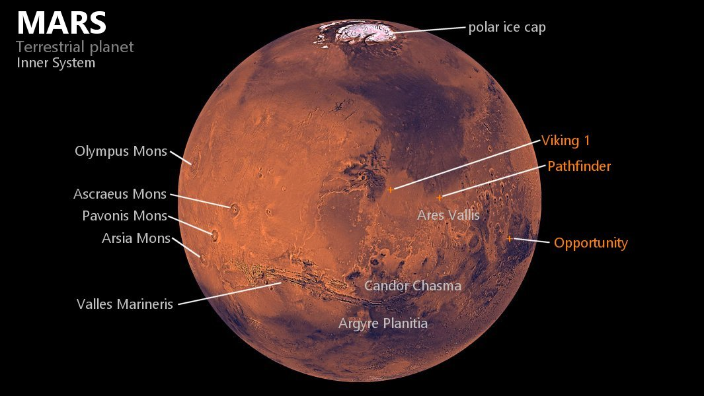
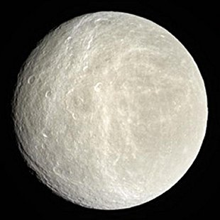
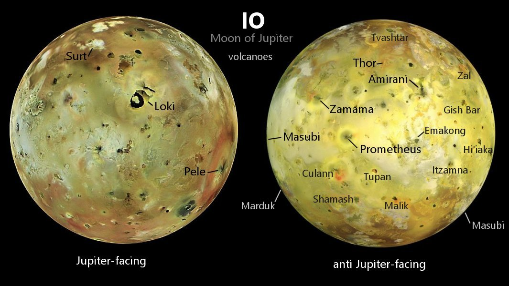

Select a planet to see our planned routes

Explore Mars, the Red Planet, with its intriguing Martian landscape that combines majestic canyons, and towering mountains. Embark on a journey that merges scientific exploration with a passion for space, igniting visions of an interplanetary future.

Visit Saturn, the "Lord of the Rings," and immerse yourself in the dazzling beauty of its sparkling rings, intriguing moons, and astronomical complexity. An experience that inspires imagination and appreciation of the wonders of deep space.

Visit Jupiter, the gas giant of the solar system, and contemplate its turbulent atmosphere, the Great Red Spot and its fascinating Galilean moons. An experience that leads us to explore the mysteries of the universe and admire its cosmic grandeur.
Detailed information
Prepare for an epic odyssey to Mars, the Red Planet, where the present-day allure of space exploration awaits your adventurous spirit. Mars, with its distinctive rusty hue and otherworldly landscapes, beckons you to discover a world of unparalleled beauty and scientific intrigue.
Imagine yourself standing on the Martian surface, gazing across the vast expanse of rusty-red deserts that stretch as far as the eye can see. As the Martian winds whip around you, you'll encounter towering canyons and mesmeric geological formations, evidence of a planet with a storied past. Descend into the depths of Valles Marineris, the solar system's largest canyon, and contemplate the forces that have shaped Mars over eons.
But Mars is more than just a desert world. Venture towards its polar ice caps, where glaciers of water and carbon dioxide hold the secrets of Martian climate history. Witness the stark contrast between the frozen poles and the arid equatorial regions, offering a glimpse into the planet's geological diversity.

As you traverse the Martian landscape, your journey will take you to the foot of Olympus Mons, the tallest volcano in our solar system, and its neighboring peaks, where you can stand in awe of their colossal size. Explore the potential for past or present life as you visit the Jezero Crater, a site that once held a lake and may offer clues to Martian biology.
The Martian moons, Phobos and Deimos, will captivate your curiosity as you ponder their origins and the unique perspectives they provide of Mars and the cosmos.
Mars, with its stark beauty and scientific enigmas, is a present-day frontier for those with a passion for space exploration. Join the ranks of adventurers and scientists as we unveil the mysteries of this iconic planet, where the possibilities for discovery and human exploration continue to unfold.
$200.000
Detailed information
Step into the awe-inspiring realm of Saturn, the crowned jewel of our solar system, and embark on a journey that will leave you spellbound by its timeless beauty. Right here, in the present, Saturn beckons with its resplendent rings and a medley of moons, promising a celestial adventure beyond compare.
Imagine yourself in orbit around Saturn, where you'll be greeted by the sheer magnificence of its iconic ring system, a breathtaking tapestry of ice and rock that defies imagination. Feel the thrill as you explore these majestic rings, witnessing their intricate patterns and stunning brilliance up close.

But Saturn is not just about its rings. Venture further, and you'll encounter a symphony of moons that will capture your imagination. Titan, the enigmatic moon with a thick atmosphere and lakes of liquid methane, will leave you pondering the possibilities of exotic life forms. Enceladus, with its towering geysers erupting from a subsurface ocean, will intrigue you with the mysteries of hidden oceans. And Iapetus, with its stark contrast between light and dark hemispheres, will ignite your curiosity about the enigmatic history of these celestial bodies.
As you journey through Saturn's celestial neighborhood, you'll be enchanted by the dance of its moons and the intricate interplay between these cosmic companions. Witness the dramatic changes in scenery and phenomena as you traverse Saturn's rings and marvel at the planet's exquisite auroras that grace its polar skies.
Saturn, with its timeless splendor, invites you to embark on a present-day celestial sojourn. Join us in unraveling the mysteries of this gas giant, its resplendent rings, and its captivating moons, where the wonders of the cosmos await your exploration.
$200.000
Detailed information
Step into the realm of Jupiter, the majestic gas giant, and embark on a cosmic odyssey that will leave you in awe of the wonders of our solar system. Right here in the present, Jupiter beckons with its sheer grandeur and a constellation of moons that promise a journey of discovery like no other.
Imagine yourself in orbit around Jupiter, gazing in amazement at its iconic Great Red Spot, a colossal storm that has captivated astronomers for centuries. Feel the exhilaration as you delve into its vibrant atmosphere, studying the swirling cloud bands and unraveling the mysteries of its tempestuous weather patterns.

But Jupiter has much more to offer. Its entourage of moons is a celestial wonderland waiting to be explored. Io, with its volcanic eruptions and surreal landscapes, will ignite your senses. Europa, with its icy surface concealing the potential for a subsurface ocean, will spark your curiosity about the search for extraterrestrial life. Ganymede, the largest moon in our solar system, will mesmerize you with its diverse terrains and intriguing magnetic field. And Calisto, adorned with cosmic scars, will transport you to the ancient history of our solar system.
As you journey through Jupiter's intricate ring system, you'll witness a celestial ballet of beauty that adds a touch of sparkle to this giant's presence. Marvel at the interplay between Jupiter and its moons, and be enchanted by the radiant auroras that grace its polar skies.
Jupiter, with its larger-than-life allure, offers a present-day adventure into the heart of our solar system. Join us in exploring the mysteries of this gas giant and its captivating moons, where the wonders of the cosmos await those who dare to venture beyond our Earthly horizons.